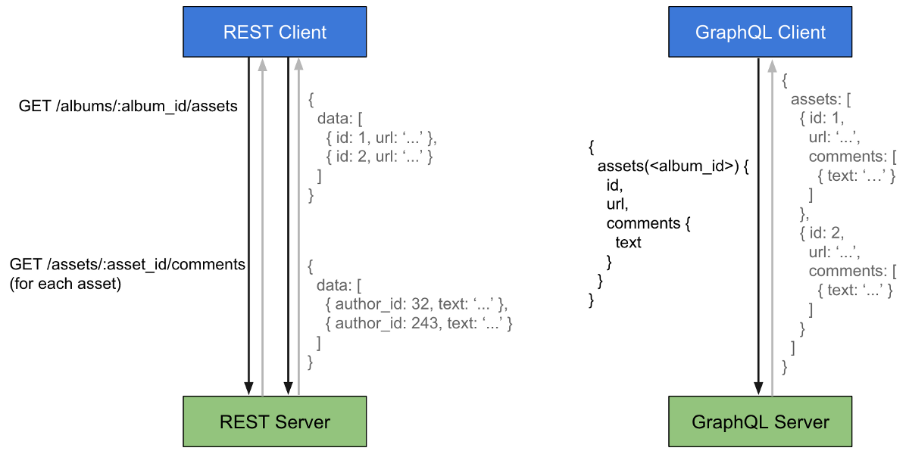
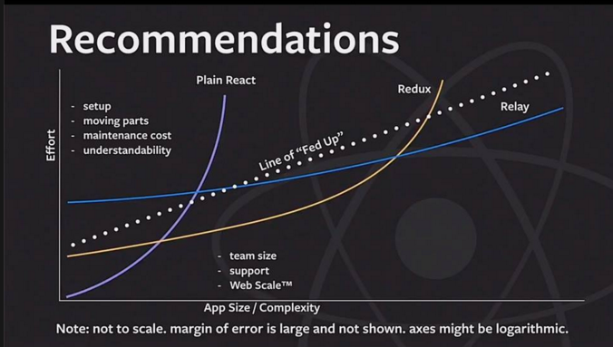

A Brief Introduction to Relay
by Jon Bullock
Jon Bullock
- Twitter: @oldfartatheart
- Email: jondooger+reacttalk@gmail.com
- Denver Devs Slack: @jonbullock
- Intro to GraphQL & Relay
- Code!
- Some Issues
- Further Topics
- Resources
vs. REST

From: Petr Bela, Medium (LINK)
Isn't this talk about Relay though?
Relay Features
- Non-invasive Container Model
- Composable Queries
- Intelligent Caching
- Type-checked w/ IDE autocomplete
Demo 2: Relay Queries, Relay Composition, Pagination
Demo 4: Putting it all Together
- Large Time Investment to create Graph Schema
- No opinion for Client-side only data?
- No Subscriptions / changes outside of app (yet)
- An Error has occured
What about Redux?

From: Jared Forsyte -- React.js Conf 2016 (LINK)
Going Further
- Cache / Manual Cache Expiration
- Transient Data
- User Specific Queries / Query Root
- Query Parameters (pagination, sort order, etc...)
Other Resources
- Data fetching for React applications at Facebook: LINK
- Jared Forsyth's Talk on Relay vs. Redux vs. Om/Next: LINK
- Thinking in Relay - LINK
- Relay Starter Kit - LINK
- Official Relay Example Apps - LINK
- Falcor (by Netflix) - Similar techonology - LINK